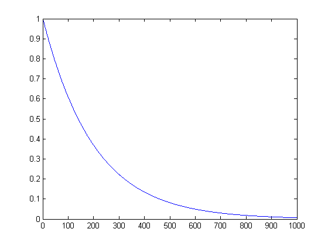
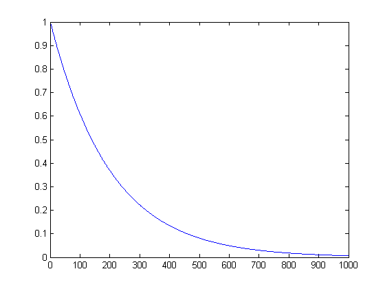

Illustration of cooling schedule for simulated annealing
initTemp = 1; coolingFactor = 0.995; for t=1:1000 if t==1 temp(1) = initTemp; else temp(t) = temp(t-1) * coolingFactor; % cool down end end plot(temp)
initTemp = 1; coolingFactor = 0.995; for t=1:1000 if t==1 temp(1) = initTemp; else temp(t) = temp(t-1) * coolingFactor; % cool down end end plot(temp)